Reviews
🐾 Share Your Doodle Dandy Story! 🐾
We'd love to feature your puppy's journey! Email us your story and photos.
Submit Your ReviewEnjoy reading all 25 of our current reviews! 🐾
Peter R.
Puppy's Name: Obi Wan
Adoption Date: August 2026
Our Story: After getting scammed on Facebook and losing our deposit and the cost of a hotel it was great working with Susan. She made sure that Obi Wan was all set for us. We picked him up at her home and had the opportunity to see Obi’s parents. It was so evident how much she cares for all of her dogs. I don’t think it possible to go wrong working with Susan. Unfortunately for you we got Obi, he is a delight.
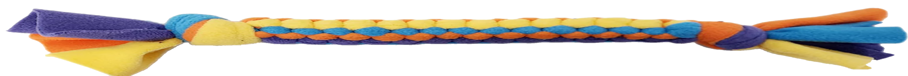
Krystal A.
Puppy's Name: Princess Leia
Adoption Date: June 2026
Our Story: We had an incredible experience with Susan! From the very beginning, her communication stood out. She FaceTimed with us multiple times so we could meet her and see the puppies, sent consistent updates and pictures, and answered every question we had without hesitation. You can tell right away that this is not just something she does, it is something she truly cares about.
Her puppies are not raised in kennels. They are raised as part of her family, and it shows. She has created an amazing environment with a dedicated puppy play area full of enrichment like tunnels, swings, and activities that help them grow and build confidence.
By the time our puppy came home, she already had a strong start with crate training and potty training, which made the transition so much easier for our family.
Susan made this entire experience feel personal and thoughtful. We are beyond grateful for the care she put into raising our puppy and into supporting us through the process. It meant so much to our family.
Monica W.
Puppy's Name: Skye
Adoption Date: April 2026
Our Story: After losing my 11 year old female maltese our house felt empty with a fur baby to cuddle and greet us when we came home. I was looking at Bernedoodle puppies to find a female near my home. I searched online and inquiries to breeders near me. Susan was a breeder who responded quickly and paired me up with the cutest female Bernedoodle named Skye. Skye has a loving a gentle personality and was easy to potty train. Susan kept me updated on the puppy's progress till the day I picked up Skye. Susan also provided treats and gifts which I very much appreciated her thoughtfulness. I would recommend this breeder to anyone looking for a new puppy.
Heidi A.
Puppy's Name: Summit
Adoption Date: April 2026
Our Story: I can’t say enough about the wonderful experience I’ve had with Susan and Doodle Dandy! Susan went above and beyond the answer my questions, send info and pics, and worked with me on a meeting place and day! She was totally invested in making Summit’s transition the best. I’m sooo happy with how socialized, happy, and well rounded Summit has come to me- a testimony of his puppy environment 🥰 thank you Susan!
Hannah A.
Puppy's Name: Pepper
Adoption Date: April 2026
Our Story: We had such an incredible experience with Susan from start to finish. From the moment we connected with her, it was clear how kind, knowledgeable, and genuinely passionate she is about what she does.
Due to some unexpected travel logistics, we ended up staying overnight on her farm during our layover while bringing our puppy home—and honestly, it turned into such a special and unforgettable experience. Getting to meet Susan in person, spend time with her animals, and see firsthand how she runs her program gave us so much confidence and appreciation for the care she puts into everything.
It is so clear that Susan is deeply committed to raising happy, healthy, and well-loved animals. You can feel the love and intention in the way she cares for each of them. Meeting the other puppies and animals and seeing their environment firsthand made it obvious that they are being raised with so much attention, socialization, and heart.
Most importantly, Susan gave me a love I didn’t even know I was missing—our puppy, Pepper. He has already brought so much joy into our lives, and we are so grateful to her for that.
Susan runs a very well put together program, and we can confidently say that because we experienced it ourselves. Getting our new fluffy addition to our family truly became an adventure—one we feel lucky to have been part of. From meeting Susan to spending time on the farm with her horses, chickens, cats, dogs, and more, it was all something we’ll never forget.
Thank you, Susan, for everything. We are beyond grateful.
Rosemary B.
Puppy's Name: Maggie
Adoption Date: January 21
Our Story: We had an absolutely incredible experience adopting Maggie from Doodle Dandy and working with Susan. From the very beginning, Susan was warm, knowledgeable, and genuinely invested, not just in Maggie, but in making sure she went to the right home. (We rescued her from the original owner) You can truly feel how much she cares.
Maggie has brought so much joy into our lives, it’s hard to even put into words. She is not only beautiful, but has the sweetest, most loving personality. She’s incredibly affectionate and always wants to be near us, yet still has this playful, goofy side that keeps us laughing every single day. She loves carrying her toys around when she gets overjoyed, it’s the cutest thing.
She’s picked up on routines quickly and adjusted to our home so naturally, like she’s always been part of our family. That doesn’t happen by accident, it’s clear she was raised with so much intention and care.
Susan made the entire process feel easy and reassuring. You can tell she pours her heart into what she does, and it truly shows in the puppies she raises.
We are beyond grateful for Maggie. She has already become such a special part of our lives, and we couldn’t imagine a better experience. We wholeheartedly recommend Susan and Doodle Dandy to anyone looking for not just a puppy, but a lifelong companion.
Tom & Patti G.
Puppy's Name: Bentley
Adoption Date: January 2026
Our Story: Susan was great right from the start. She responded to our application very quickly and gave us detailed information and answered all our questions. Susan explained the process and let us know what we would need to do if we chose to continue with adopting Bentley (formerly, Happy, one of the Seven Dwarfs). It was an easy decision, as we were comfortable and at easy with Susan. She made arrangements to have a pet nanny fly with our puppy in the cabin of the plane to our home state in New York. Susan is an honest and caring breeder who has experience caring for animals, both as a veterinarian technician and at home on a horse farm.
Throughout the whole process, communication was great. Susan was always available to answer our many questions and offer advice. Even after we had Bentley home with us, Susan followed up to make sure everything was ok. We would recommend Susan if you are looking for a well cared for and health puppy.
Matthew P.
Puppy's Name: Willow
Adoption Date: January 2026
Our Story: Susan was amazing! She was quick to respond, answered every single question we had, and still answers any questions we have. She is a breeder that cares for her babies and it shows! We couldn't have asked for a better experience! We are so thankful for the opportunity and if we ever get another puppy we will definitely be reaching out to Susan! We love our sweet Willow girl so much and she is a perfect fit for our family.
Andrew D.
Puppy's Name: Colby
Adoption Date: January 2026
Our Story: Susan was very responsive and helpful during the process of searching for and purchasing a puppy. She also was great sharing additional advice on food, training and vet care tips! An amazing caring and thoughtful personality. She is really passionate and thorough when it comes to hand over. Travel arrangements and making sure you have everything you need the first few days when welcoming your new pup. Would 100% recommend her to first time dog owners and seasoned dog owners as well. Just a fabulous experience, thank you Susan!
Marlee B.
Puppy's Name: Yondu
Adoption Date: January 2026
Our Story: I highly recommend Doodle Dandy. Our experience with Susan could not have been better. She made the process so easy. She was so responsive and caring and kind. She shared in the excitement of bringing our new puppy home. We feel so lucky we found her through Good Dog.
Beth B.
Puppy's Name: Gracie
Adoption Date: September 28, 2025
Our Story: Gracie is an amazing pet which I attribute to her breeder, Susan. She is smart and confident. She immediately learned to fetch. She loves other animals-cats and dogs. Potty training and sleeping has been simple. We crate her and call it her “house”. We would highly recommend Susan to anyone wanting a great dog.
Priscilla G.
Puppy's Name: Jessie
Adoption Date: September 2025
Our Story: I got Jessie from Susan about 2 weeks ago and Im absolutely in love her! She fits in perfectly with my family and has become obsessed with my golden doodle. I’m so grateful to have worked with Susan, it was my first time using good dog so she was very helpful and reassuring throughout the whole process which made everything work out so smoothly! She went above and beyond in updating me with messages, pictures, and FaceTime calls. She even provided so many resources to give Jessie the easiest transition when coming home with me. She truly put so much love into Jessie and I will forever be grateful! 🫶🏽
Mary F.
Puppy's Name: Dunkin
Adoption Date: March 29, 2024
Our Story: I don’t even know where to begin with the wisdom and service that Susan provides as a puppy owner! We adopted Dunkin, our Aussiedoodle, after suddenly losing a 7 year old dog and needing a companion for our 9 yo goldendoodle. I was so nervous about adopting a puppy, and going through the exhausting puppy stage, but Susan walked me through every step of the process. Susan not only provides amazing socialization and beginning training for puppies prior to going home, but she provides nonstop encouragement and support for them AFTER they have gone home. She responds quickly to any and all questions (and I had MANY!) and helped me ensure I was providing a good foundation for Dunkin during those early weeks. We received amazing food recommendations, instructions on how to feed him, crate train him and get him on a solid eating schedule. Dunkin was likely the most “energetic” of his litter, but also has such an amazing personality that he makes us laugh multiple times daily. He was quick and eager to learn manners and is such a wonderful family member. I am often asked about Dunkin when out on walks and I recommend Susan to any family that is looking for a new addition. She walks alongside you in loving dogs and wanting the best for them and will be a lifelong friend!


Cody B.
AMAZING EXPERIENCE (key word experience)!!!! Wasn’t even necessarily after an Aussie-doodle, just was inquiring, and the way Susan communicated, provided IMPORTANT information w/out me asking, goes so far in my book. I still literally text her to this day! From day one I feel honored to even have a dog from her, like it’s a privilege. Thank you Susan so very much we love our Leo! Will be recommending you to anyone and everyone.


Nina F.
I cannot say enough great things about Susan! I was a first time puppy owner and I knew I wanted a doodle! I had applied for other dogs, looked into different websites and breeders, and what I found was waiting lists and down payments on puppies that were not even born yet! When I came across Susan and her puppies, she reached out to me within minutes of my interest and answered every question I had. When I decided to purchase with her I received weekly pupdates that included photos and videos of my pup! Upon arrival on adoption day, I was greeted with open arms and a very happy puppy, my Auggie boy is a great addition to our family and I will be reaching out to Susan with any other future dog needs!
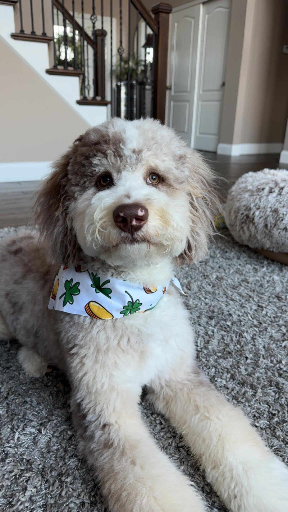
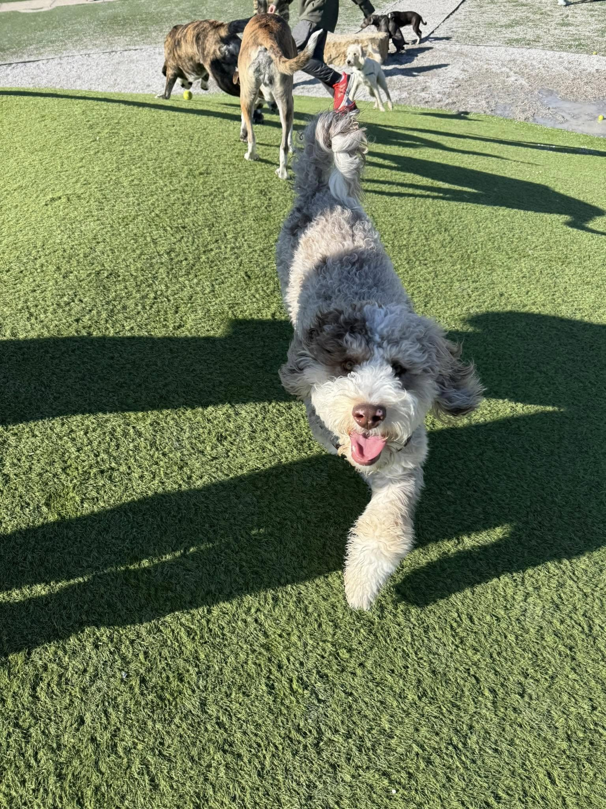
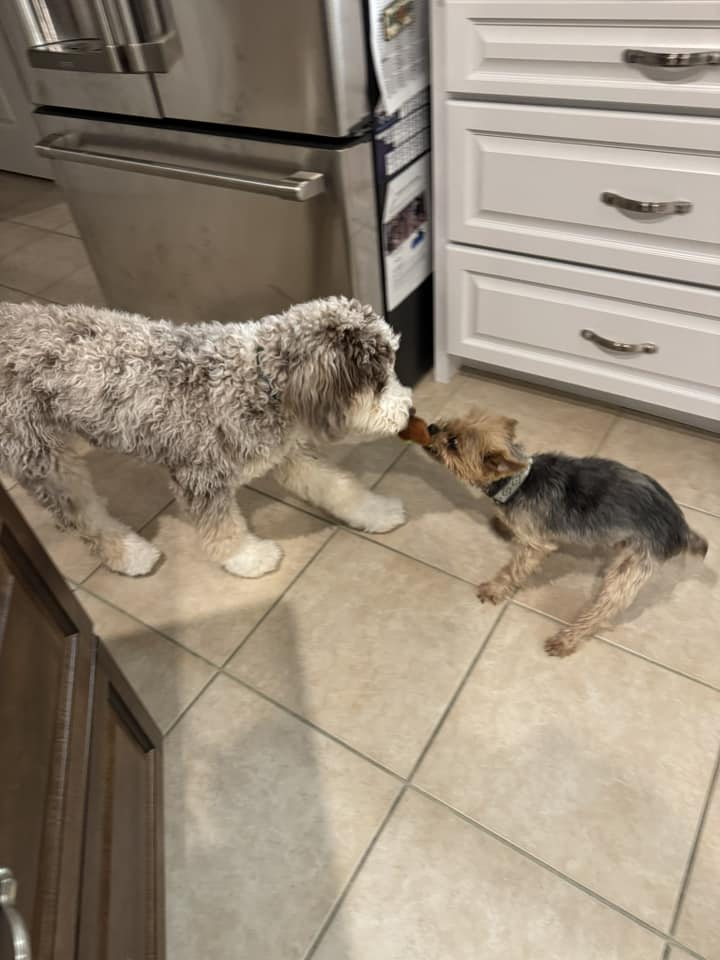
Sarah W.
Doodle Dandy Review: Wow, what great service we have received from Susan!! I did not expect to be able to ask so many questions before and after adoption. We are so grateful for the tips and tricks! We also LOVE the Congrats file!! It is so full of information! We have referenced it time and time again! The gift bag is so generous as well. The Snuggle Puppy is such a huge blessing because our puppy sleeps and naps with it all the time. We really believe that helped our transition to home – especially because he was already used to it! The blanket that smells like their litter is also so wonderful. We have adopted a pup from another breeder before and the service was NOTHING like Susan's. We received a small blanket when we left and that was nice, but they had Snuggle Puppies for sale (not as a gift). They would also not allow us to be in contact with other families that adopted from the same litter. The breeder contact mentioned there was another puppy adopted to our same town but they did not allow us to contact each other. It just felt very cold and sterile – nothing like Susan and Doodle Dandy. We appreciate that Susan is as available as we'd like her to be, she has always been very reachable and transparent. She's also encouraged us to engage with other families. It's so nice that we don't have to feel as though she's hiding something. So refreshing!!! Thank you, Susan!
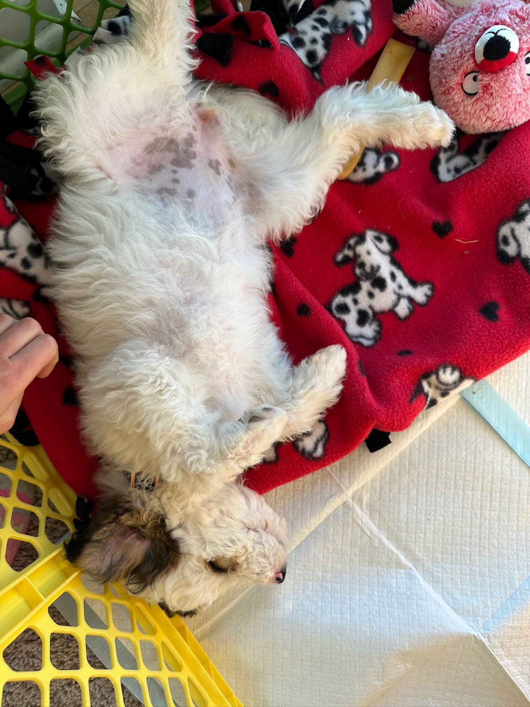
Greg G.
We saw Sophie online formerly Windy and we knew we had to have her so I started communicating with good dog and the breeder Susan, the breeder was phenomenal. We were in Chicago visiting family and were leaving early on Sunday, 20 October Susan's farm is only 20 minutes off of Route 40 easy to find my wife's name is Susan both Susan's share the same birthday we are both from Chicago the Windy city so we thought too many coincidences we knew it was meant to be, so we picked up Sophie on the way home to Arizona, she did excellent in the car. Excellent first night and has been improving every day. Sophie is an Aussiedoodle, an amazing breed listens well getting to know her settings her spot to go do her duty couldn't be more happy with Susan the breeder, doesn't just turn the dog over to you. I was impressed how she called the next morning. Asked how it went. I told her well the Puppy woke up twice and I stuck my hand inside the small travel carrier and just petted her back to sleep no accidents in the car on the way home minimal accidents so far for one week. She's doing great Susan checks back periodically to make sure there's anything you need or need to know I highly recommend good dog and I highly recommend Susan as a breeder
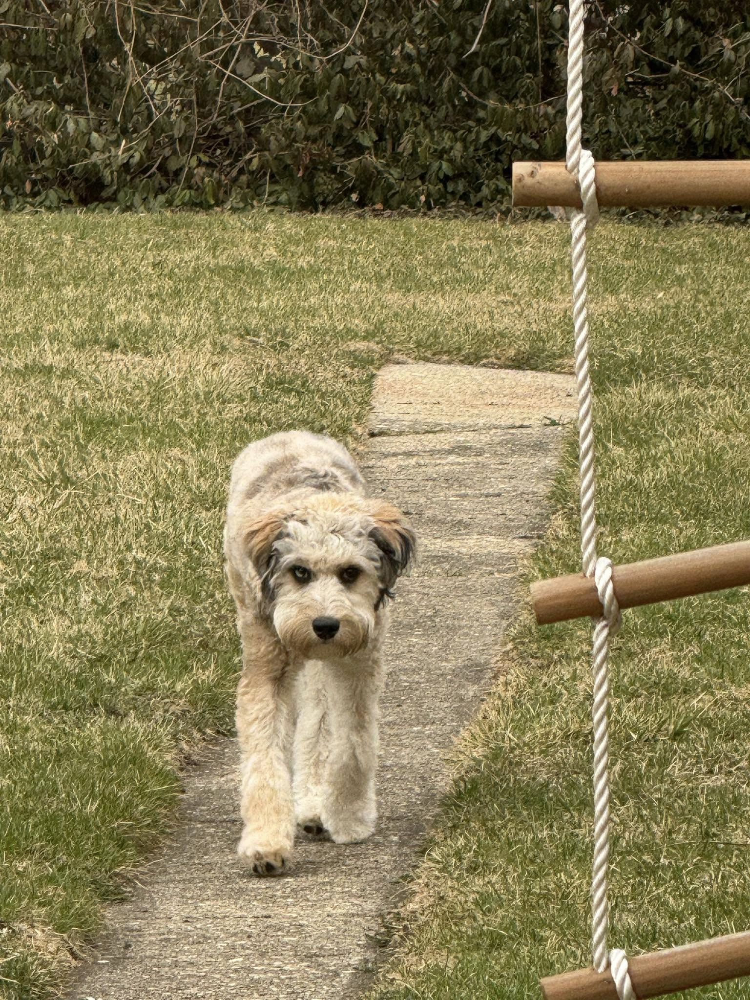
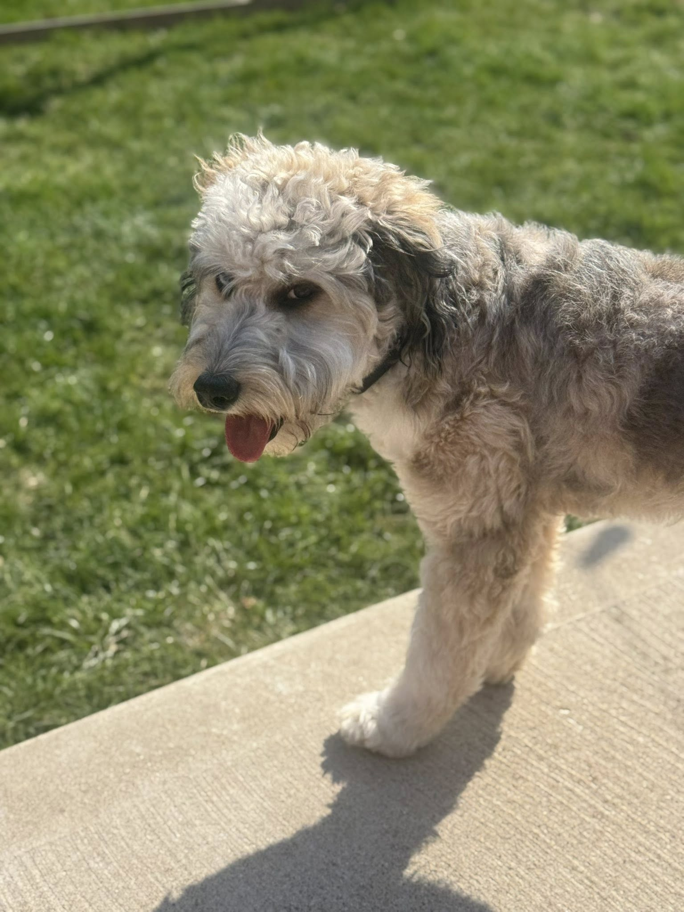
Phil A.
Susan was incredibly responsive—every time I had a question, she would reply almost instantly! Her love for her dogs truly shines through. She provided me with an amazing Congrats file packed with so much useful information; it will definitely be a go-to resource for me! I'm thrilled to have found Doodle Dandy through Good Dog! The entire process was smooth and easy. Susan also provided detailed preparations for bringing my girl home, making me feel confident and ready for the big day. Thank you, Doodle Dandy and Susan, for all the love and care you put into this. It's clear that these dogs are your passion. Now, Sweetie and I have some adventures to embark on! ~Phil
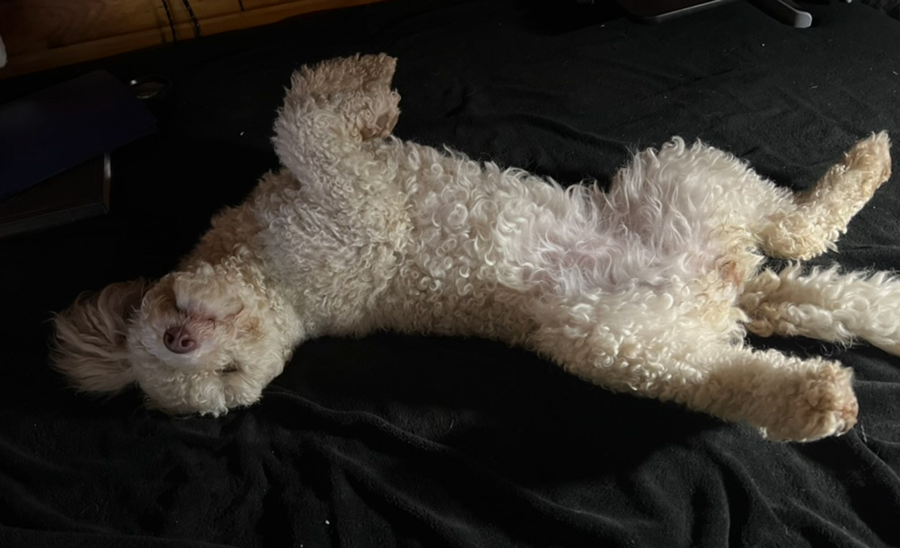
John S.
We had an amazing experience adopting our Aussiedoodle puppy, Loki, from Susan. She was incredibly helpful and knowledgeable throughout the entire process, providing us with all the information we needed to make an informed decision. Loki is a bundle of joy and has quickly become a beloved member of our family. We're so grateful to Susan for giving us the opportunity to bring this wonderful pup into our home.
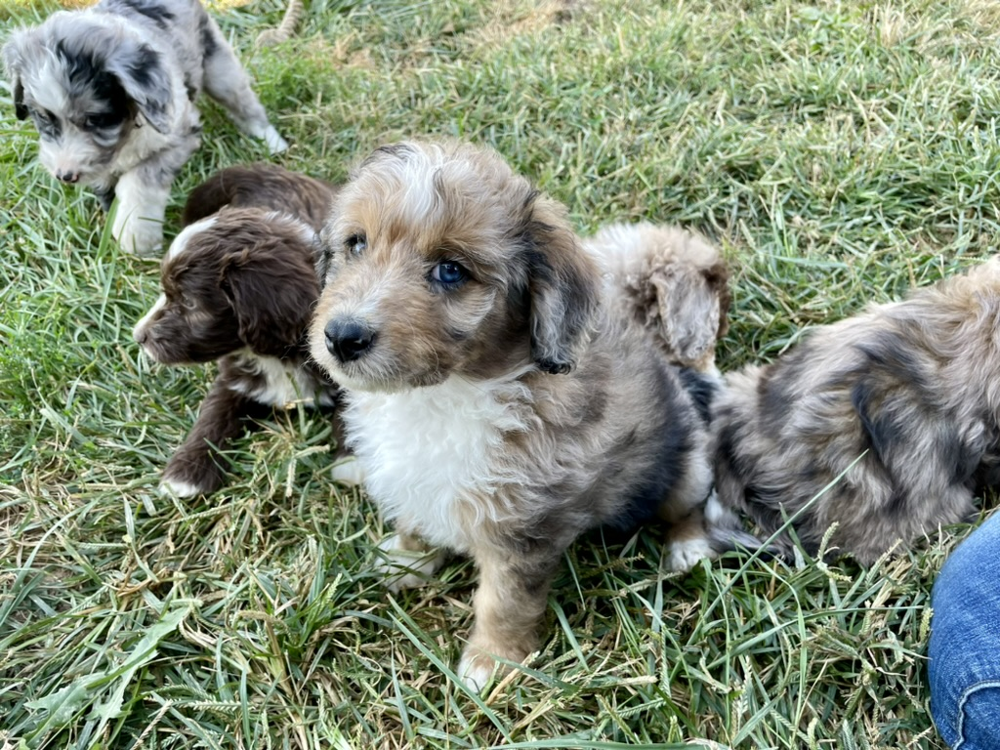
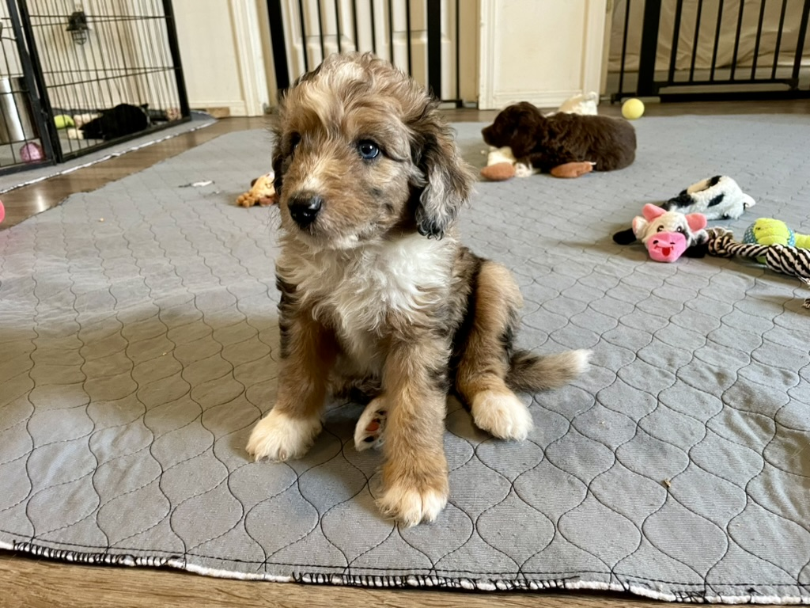
Cherizar W.
FIVE Stars... Susan changed my life with such an amazing pup. And thank you Chip and PZ for bringing Blitzen into this world. Susan's family went above and beyond ~ her son and friend drove Blitzen all the way to IL. I can tell her family raises their pups with a lot of love and attention. When we met Blitzen (3 mo. old) he would rest his nose on my nose and lock eyes the whole ride. Soon as we brought him home he would not stop with kisses :) Also ran through a tunnel (for agility training) without any training! Cannot wait to have fun with him and watch him grow. Susan included a gift bag that was perfect for the ride home (Blitzen loves sleeping on the cooling pad that has his mom's scent). We noticed my sister's dog was not shaking in the car for the first time because Blitzen was a role model - very calm in the car. They look like father and son, and are starting to mimic each other. Very grateful to Susan for this beautiful pup. When I wake up next to him and his "blizzard" hair I'm so grateful..
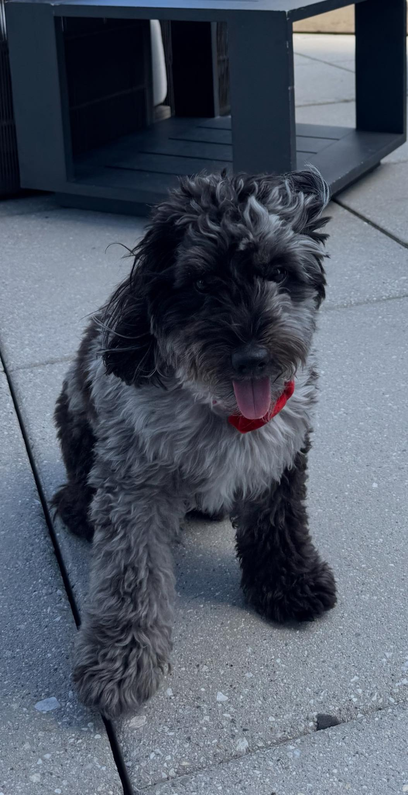
Marie H.
Our Puppy This is our third puppy from Doodle Dandy, and each experience has been exceptional! The level of care, attention to detail, and the extra efforts made for both the puppies and their new families are truly remarkable. Every time we bring home a puppy from you, I'm amazed at how smoothly they transition into our home. Wherever we go, people are always impressed by our Doodle Dandy puppy—not just because of their adorable looks, but also their wonderful temperament. The quality of your dogs, coupled with the extra love and care you provide, is beyond words. We genuinely feel like part of the Doodle Dandy "extend-a-pup" family, just as you always say! Thank you so much for trusting us with our new baby. — Marie
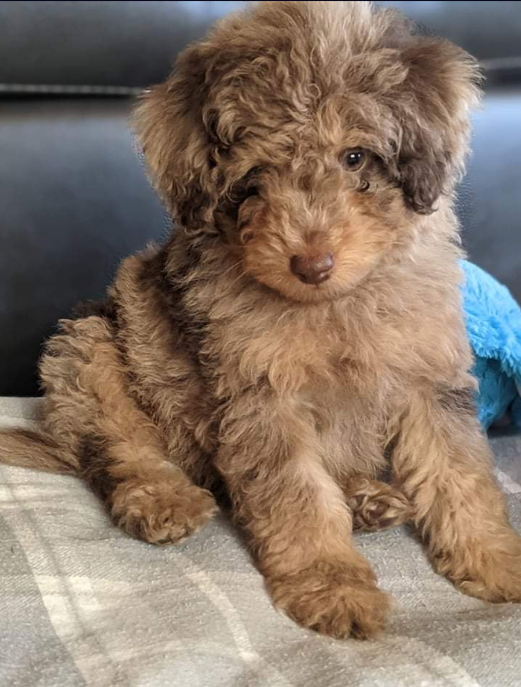
Redford G.
Thanks Susan for my beautiful Myst - she is everything I could have dreamed of. Thanks to Good Dog for this easy to use platform. Doodle Dandy is A+ "Head of the pack" Thanks again, Redford
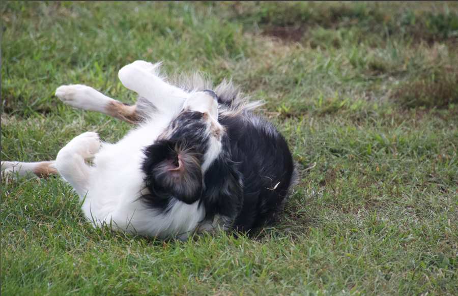
Holly P.
I found Susan through Good dog. I wanted to find a Aussiedoodle that was careful not to "over Aussiedoodle" and really treated the puppies like a lover of dogs. Susan was very responsive to all my questions. She could answer all my questions without hesitation and it was clear she knew the Aussiedoodle. She worked with me on a date for pick up and was flexible when I needed to change that date. She FaceTimed me to allow me to see my puppy's behavior & personality. I am very happy with Susan & with my sweet little Harper. She is happy, calm, & so loving. Very pleased with my sweet little girl!
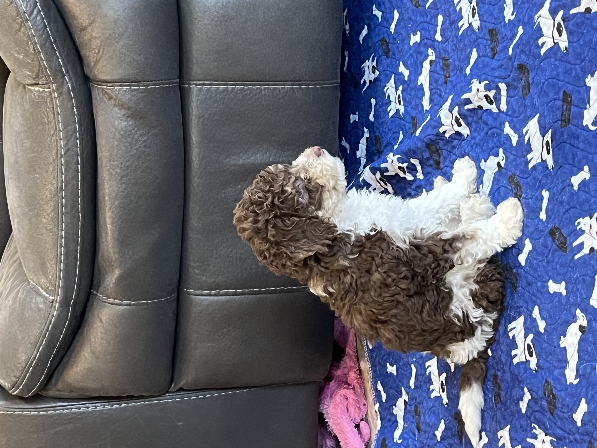
Hannah S.
Susan was so wonderful to work with. You can tell how much she cares about the puppies and was very knowledgeable about our puppy and the breed. She was very responsive and easy to work with. Susan had already done some training and he has transitioned to our home beautifully. He is so well behaved and we absolutely adore our puppy. Susan he is such an Angel. He did so well in his crate overnight and is amazing at going potty outside. We absolutely adore him.
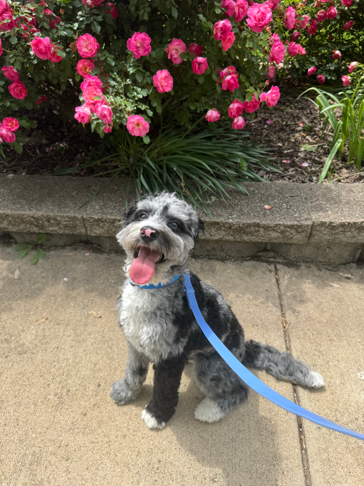
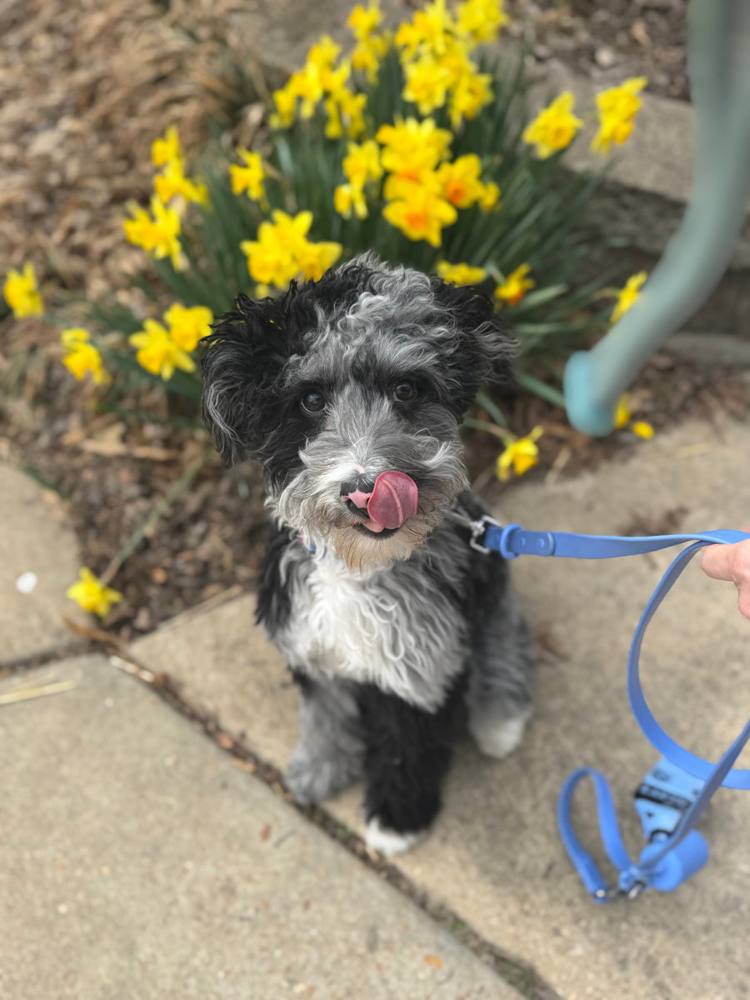
Felicia B.
Our experience with Susan at Doodle Dandy was nothing short of wonderful! From the moment we began the process of bringing Oakley home, Susan was there every step of the way. She kept us informed with constant updates, sent photos, and answered all our questions thoroughly. It's clear she truly cares about each puppy and each family she works with. Susan even went above and beyond to personally bring Oakley to us in Florida, making sure the transition was smooth. Now that Oakley is here, we're completely smitten! He has the sweetest, calmest personality but is still so playful and fun. It's obvious that Susan's love and care have shaped him into the perfect addition to our family. We're so grateful to Susan for her dedication, and we'd wholeheartedly recommend Doodle Dandy to anyone searching for their perfect pup!
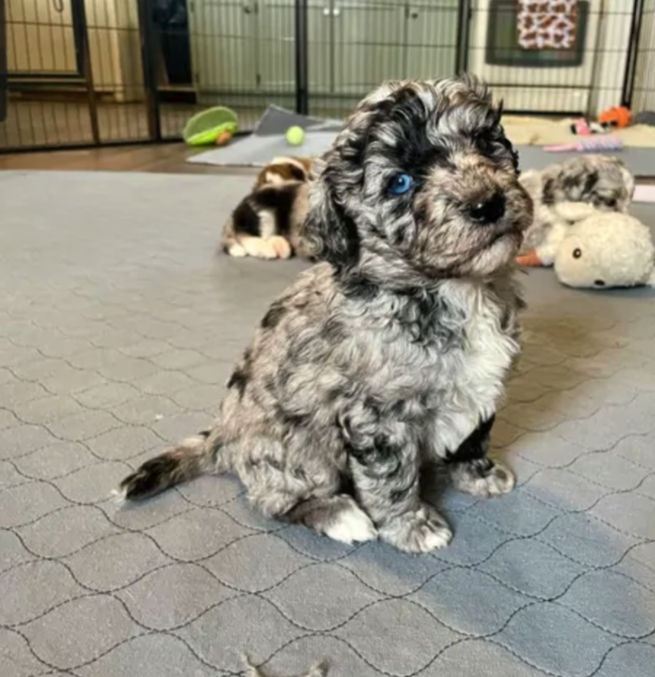